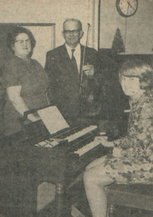

Walter Emil Wogsland
19?? - ?
Walter Emil Wogsland was born to Carl and Anne Wogsland. He played the violin his whole life. He married Vivian Clementson and together they had one child, a daughter.

Vivian, Walter, and daughter Hannah in 1970.
Parents:
Anne Amundson
1879 - 1953
Carl Oscar Wogsland
1870 - 1946
Offspring:
Hannah Beth Wogsland
19?? - ?
References:
1. Neal Wogsland
2.
Iola Herald
, December 10, 1970.
Last changed on 24 May 2004 by
Bradley James Wogsland
.